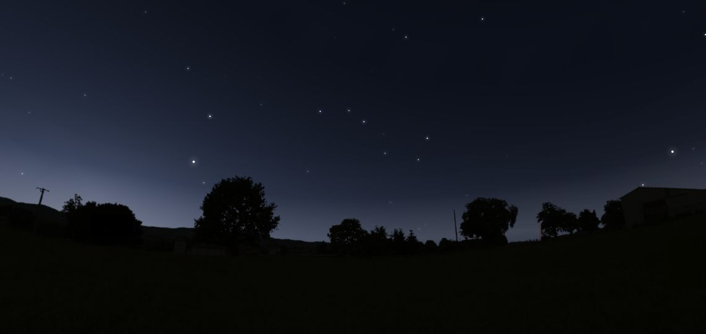
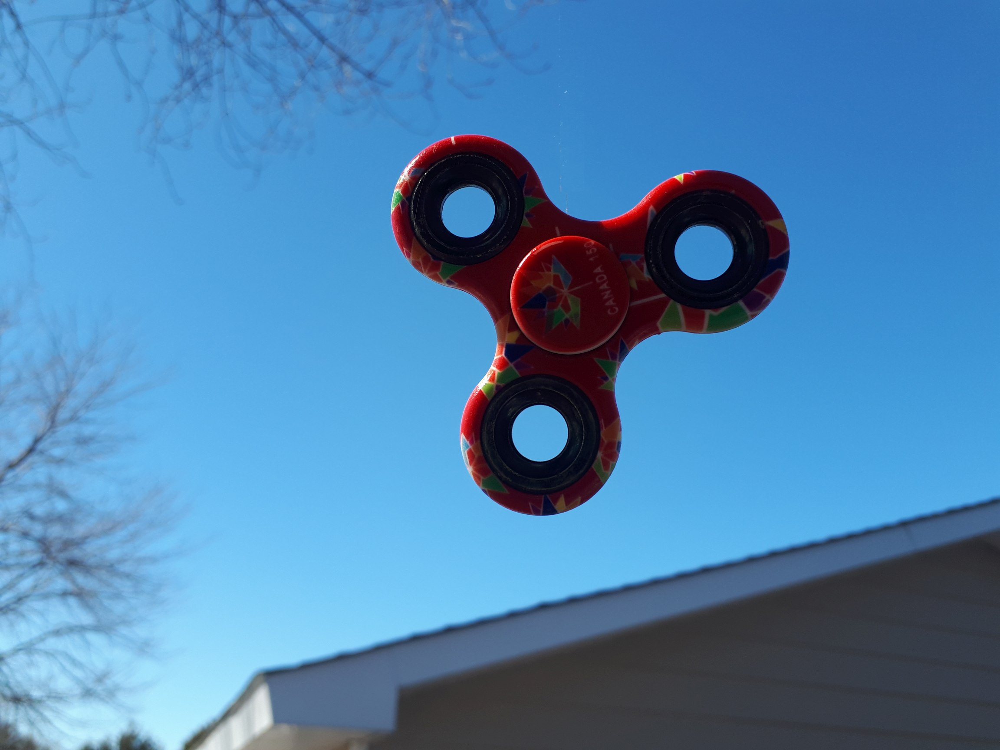
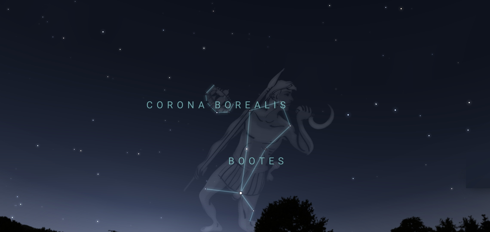

Once upon a time…
Once upon a time, there lived a boy, who saw the inner magic in the stars above, who would confine to them his sorrow and his joy, and who could speak his feelings in the melodies of love…
Давным давно …
– Давным давно, когда ни тебя, ни меня, ни даже моих пра-пра бабушек, пра-пра дедушек ещё не было, да и вообще людей ещё не было, а было только Небо и были Звёзды, жил был принц, которого звали Волопас, и принцесса, которую звали Северная Корона. Они не знали друг друга, жили в разных странах, разговаривали на разных языках. Но одно у них было общее - они одинаково любили красоту и музыку как часть этой красоты.
– А почему их так необычно звали? И что дальше было?
– О, Это очень длинная и очень красивая история, а точнее много разных историй. Но главное, что в конце концов они встретились и жили долго и счастливо вместе. Собственно, они и сейчас продолжают жить. Посмотри на небо и ты их там увидишь.

– Вон там, видишь - прямо над деревьями, слева от Большой Медведицы? Это - самое удивительное, самое гармоническое, и самое красивое созвездие. А точнее два созвездия, встретившихся много лет назад тобы радовать тебя и меня своей красотой. Разве это не удивительно - смотри большой яркий абсолютно ровный равносторонний треугольник, посаженный на ручку Большой Медведицы!
– Так это же фиджет спиннер, такой как ты подарил мне на день рождения!
– Да, ты правильно заметила он как огромный фиджет спиннер в руке Большой Медведицы.

– И у них родилось много прекрасных песен и эти песни продолжают жить и звучать. Только не все их могут слышать, также как и не все могут видеть эти удивительные созвездия.
– Теперь в наши дни, к сожалению, далеко не все смотрят на небо и ещё меньше людей слушают его. А те кто и смотрят, чаще всего видят лишь яркие точки, не зная кто они и что они нам говорят. А вот когда я был маленьким, может только чуточку старше тебя, я часто ходил вечерами со своим папой и нашей собакой, и мы смотрели на небо, и папа мне рассказывал много историй про эти звёзды и многое другое. Некоторые из этих историй я запомнил и смогу тебе пересказать. Другие я услышал потом, многие были даже без слов, но с музыкой, и ты их тоже сможешь услышать. Хочешь?
– Очень!
– Ну тогда поехали! Выбирай сюжет и нажимай на линк!
